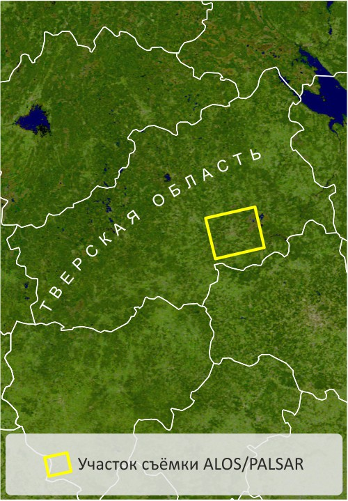
Тверская область расположена в лесной зоне, в подзоне южной тайги, переходящей в смешанные леса.
Преобладающие породы хвойных деревьев - ель и сосна, мелколиственных - берёза, осина, ольха, рябина,
ива, широколиственных - дуб, липа, клён, вяз, ясень. Основными вырубаемыми породами являются ель и
сосна, древесина которых в дальнейшем используется в качестве строительного материала.
Для выявления лесных вырубок использованы радиолокационные данные ALOS/PALSAR, полученные в
интерферометрическом режиме 24 декабря 2006 г., 8 февраля и 27 декабря 2007 г., 11 февраля 2008 г. Все
данные имеют уровень начальной обработки SLC (Single Look Complex), т.е. содержат и амплитудную, и
фазовую составляющие.
Предварительная обработка данных включала следующие
этапы: некогерентное накопление, автоматическую корегистрацию, фильтрацию спекл-шума и
ортотрансформирование.
Для каждой пары снимков, полученных с интервалом в 46
дней, составлено многовременное синтезированное изображение: красный цвет присвоен амплитудной
составляющей
более раннего снимка, зелёный - амплитудной составляющей
более позднего снимка, а синий - изображению когерентности, рассчитанному с использованием фазовой
составляющей.
Лесная растительность даёт высокие значения
обратного радиосигнала и вследствие этого на амплитудных снимках
имеет высокую яркость. Ровные участки без густой и высокой растительности, напротив, дают низкий
обратный сигнал и, как следствие, имеют низкую яркость на снимке. Когерентность является мерой сходства
двух снимков, принимает значения от 0 до 1 и характеризует степень изменения местности. Низкие значения
когерентности, которым соответствуют тёмные участки изображения, говорят о существенных изменениях,
произошедших между двумя съёмками (например, вырубка леса). Высокие значения когерентности, которым
соответствует высокая яркость на изображении, характеризует стабильные объекты (здания,
безлесные участки).
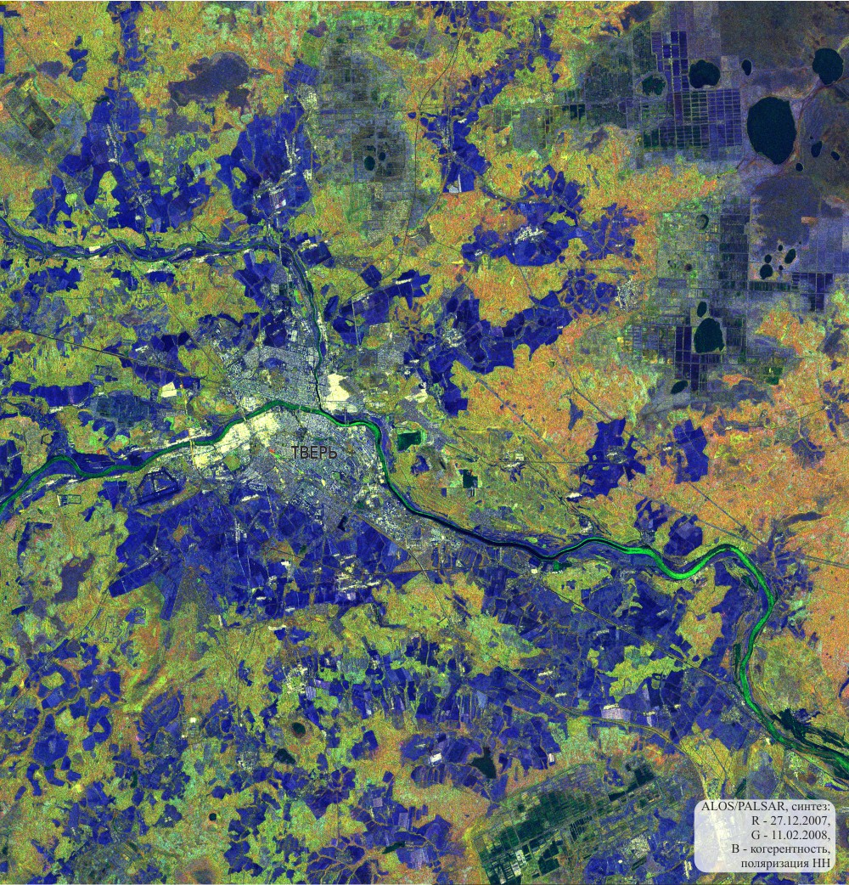
Синтезированное изображение, составленное из двух разновременных снимков и изображения их
когерентности, позволяет выделять различные объекты местности на основе различий величины обратного
рассеяния
радиосигнала, а также выявлять изменения, произошедшие
за период между съёмками.
| Изображение участков лесной растительности |
| 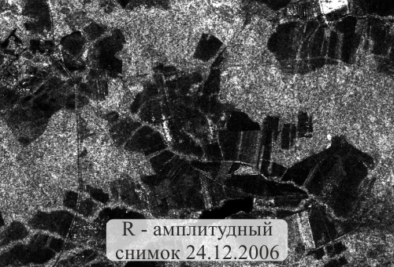 |
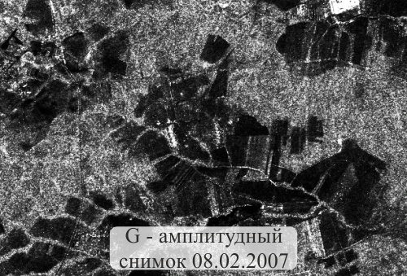 |
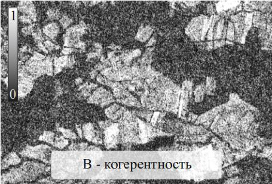 |
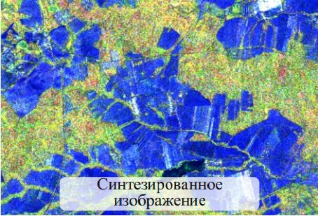 |
Участки лесной растительности на синтезированном изображении, составленном из двух
разновременных радиолокационных снимков и изображения их когерентности, имеют жёлто-зелёный
цвет: R и G - относительно высокая яркость на обоих амплитудных снимках обусловлена
высокими значениями обратного сигнала благодаря преобладанию механизма объёмного рассеяния, B -
низкие значения яркости изображения, которому при цветовом синтезе присвоен синий цвет,
объясняются низкими значениями когерентности из-за постоянного движения частей деревьев
(листьев, ветвей).
Безлесные участки на радиолокационном синтезированном изображении имеют синий цвет: R и G -
низкая яркость на обоих амплитудных снимках из-за слабого обратного сигнала от относительно
ровной поверхности, B - высокая яркость на изображении когерентности из-за её высоких значений
благодаря отсутствию изменений между съёмками.
|
| 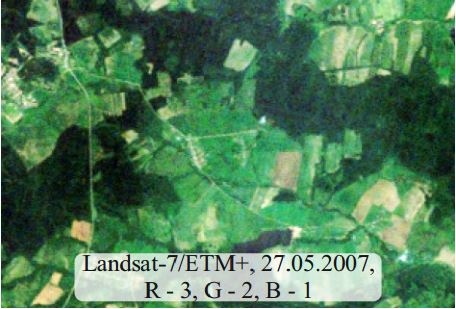 |
На снимке в видимом диапазоне (при синтезе с натуральной цветопередачей) лесной
растительности соответствует тёмно-зелёный цвет, а участкам без древесной растительности -
светло-зелёный или бежевый. |
Изображение участков леса, вырубленных за период между съёмками
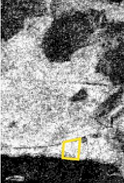
R - амплитудный снимок 27.12.2007
|
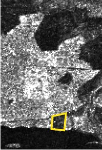
G - амплитудный снимок 11.02.2008
|

B - когерентность пары снимков
|

Синтезированное изображение
|
Вырубки, появившиеся за период между
двумя радиолокационными съёмками (46 дней), изображаются ярко-красным цветом: R - высокая яркость на снимке
от 27.12.2007 г. обусловлена наличием древесной растительности, дающей сильный обратный сигнал, G - низкая
яркость на снимке от 11.02.2008 г. связана со слабым обратным сигналом от ровной поверхности без древесной
растительности, B - низкие значения когерентности (и низкая яркость этого изображения) обусловлены
произошедшими изменениями.
| 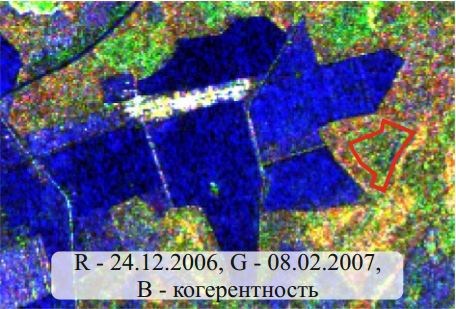 |
 |
Сравнение двух синтезированных радиолокационных изображений (составлены из двух пар снимков: 1) 24.12.2006
г. и 08.02.2007 г.; 2) 27.12.2007 г. и 11.02.2008 г.)
позволило выявить вырубки, появившиеся приблизительно за год. На первом синтезированном изображении лес на
участке будущей вырубки (он оконтурен красной линией) имеет жёлто-зелёный цвет, а на втором, после вырубки,
– синий. Изменение цвета на втором синтезированном изображении обусловлено снижением яркости амплитудных
снимков от 27.12.2007 г. и 11.02.2008 г. (участок вырубленного леса характеризуется низкими значениями
обратного сигнала за счёт преобладания однократного отражения) и увеличением яркости на изображении
когерентности (безлесный участок характеризуется высокой стабильностью между съёмками).
| Изображение населённых пунктов |
| 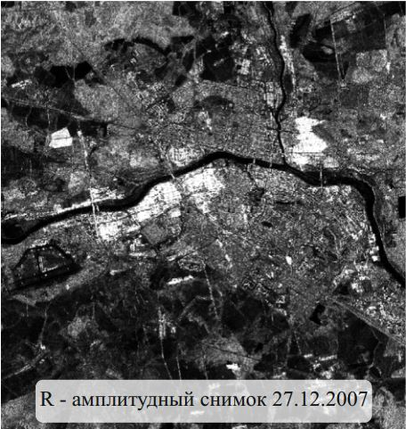 |
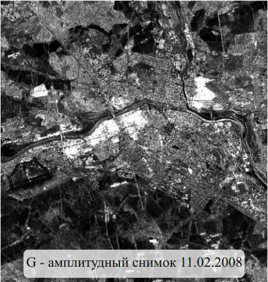 |
 |
 |
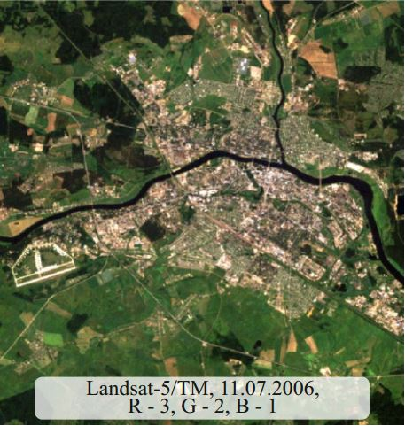 |
| Город на синтезированном радиолокационном снимке изображается сочетанием
преимущественно белого и синего цветов. При формировании обоих цветов наблюдается высокая
яркость на изображении, которому при синтезе присвоен синий цвет (при используемом варианте
синтеза это изображение когерентности. Высокие значения этого параметра объясняются отсутствием
сильных изменений за период между съёмками). Белый цвет на синтезированном изображении
характерен объектам, которые имеют высокую яркость на обоих амплитудных снимках. В нашем случае
это здания, дающие двукратное рассеяние радиосигнала в сторону радиолокатора, и металлические
объекты. Синим цветом изображаются те объекты, которые имеют низкую яркость на обоих амплитудных
снимках - асфальтированные поверхности (в том числе взлётно-посадочная полоса в западной части
города), дающие однократное рассеяние радиосигнала в сторону от радиолокатора. |
| Изображение объектов гидрографии |
| 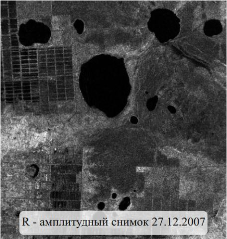 |
 |
 |
 |
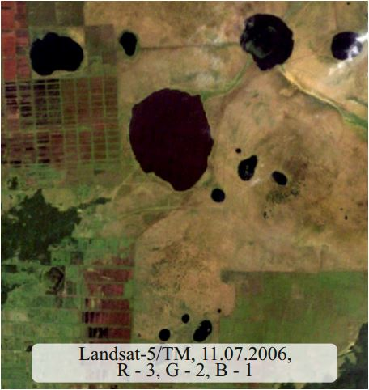 |
| Объекты гидрографии на синтезированном
радиолокационном снимке изображаются тёмно-синим или чёрным цветом. Они дают низкие значения
обратного сигнала из-за однократного отражения волн в противоположном от радиолокатора
направлении и, соответственно, низкую яркость на обоих амплитудных снимках. Поскольку радиоволны
L-диапазона способны проникать сквозь озёрный лёд, их отражение происходит на границе
"лёд-вода". Объекты гидрографии характеризуются низкими значениями когерентности, в результате
чего они имеют низукю яркость на изображении, которому при цветовом синтезе присвоен синий цвет.
|
| Изображение заболоченных участков |
| 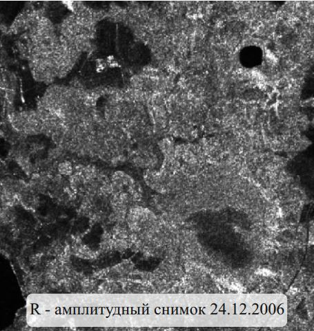 |
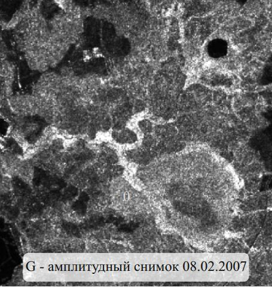 |
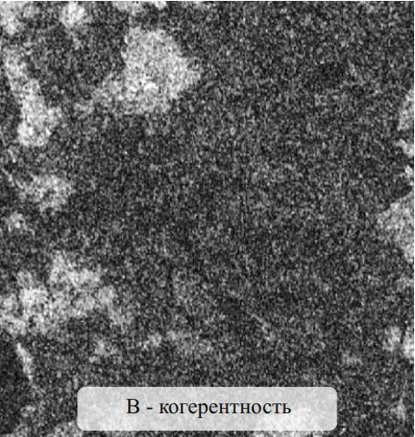 |
 |
 |
| Изображение заболоченных участков на
синтезированном радиолокационном снимке сильно зависит от состояния местности в момент съёмки.
На представленном снимке такие участки имеют ярко-зелёный цвет: R - относительно низкая яркость
на снимке первого срока обусловлена низкими значениями обратного сигнала, которые могут быть
связаны с наличием воды, приводящей к преобладанию зеркального отражения, или мокрого снега,
способствующего поглощению радиоволн (согласно данным архива погоды, за несколько дней до съёмки
и в сам день съёмки температура воздуха удерживалась около 0°, что могло привести к таянию
снега), G - высокая яркость на снимке второго срока объясняется высокими значениями обратного
сигнала, что может быть связано с увеличением шероховатости промерзшей поверхности, B - низкая
яркость на изображении в синем канале объясняется низкими значениями когерентности,
обусловленными изменениями, произошедшими за период между съёмками. |
Наверх